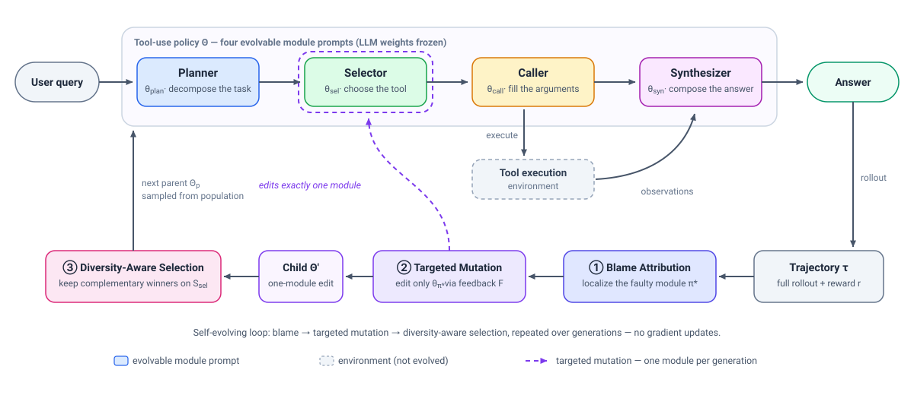
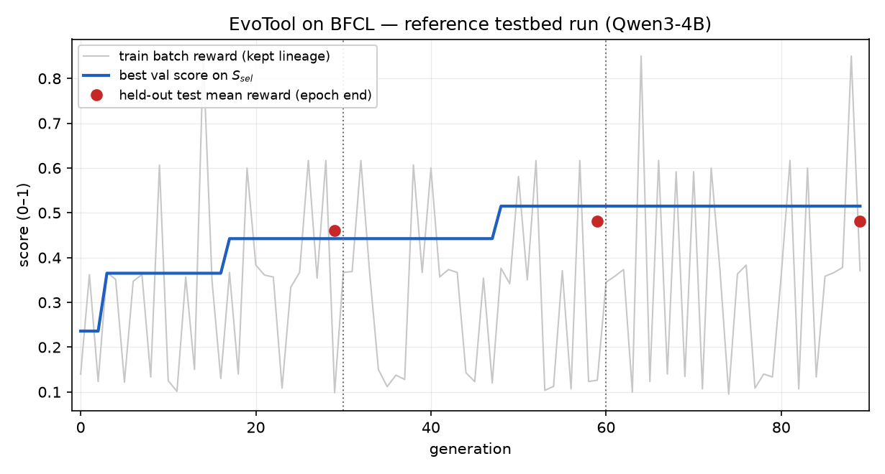

Abstract
LLM-based agents depend on effective tool-use policies to solve complex tasks, yet optimizing these policies remains challenging due to delayed supervision and the difficulty of credit assignment in long-horizon trajectories. Existing optimization approaches tend to be either monolithic, which are prone to entangling behaviors, or single-aspect, which ignore cross-module error propagation. To address these limitations, we propose EvoTool, a self-evolving framework that optimizes a modular tool-use policy via a gradient-free evolutionary paradigm. EvoTool decomposes agent’s tool-use policy into four modules, including Planner, Selector, Caller, and Synthesizer, and iteratively improves them in a self-improving loop through three novel mechanisms. Trajectory-Grounded Blame Attribution uses diagnostic traces to localize failures to a specific module. Feedback-Guided Targeted Mutation then edits only that module via natural-language critique. Diversity-Aware Population Selection preserves complementary candidates to ensure solution diversity. Across four benchmarks, EvoTool outperforms strong baselines by over 5 points on both GPT-4.1 and Qwen3-8B, while achieving superior efficiency and transferability.
Method

A user query flows through the four-module tool-use policy to an answer. Each generation, the rollout trajectory is diagnosed, exactly one blamed module’s prompt is rewritten, and the population keeps complementary candidates.
Trajectory-Grounded Blame Attribution
Supervision in long-horizon tool use is delayed, making credit assignment hard. EvoTool uses diagnostic traces from the rollout to localize each failure to a specific module — Planner, Selector, Caller, or Synthesizer — turning a trajectory-level outcome into a module-level signal.
Feedback-Guided Targeted Mutation
Given the blamed module, a mutator edits only that module’s prompt specification, guided by a natural-language critique of the failure. Edits stay targeted, avoiding the entangled behaviors that monolithic rewrites are prone to.
Diversity-Aware Population Selection
Rather than greedily keeping a single best candidate, the population preserves complementary candidates to ensure solution diversity, so distinct strengths survive across generations of the self-improving loop.
Gradient-free by design: only the four module prompt specifications evolve — the LLM weights stay frozen.
Main Results
EvoTool is evaluated on four tool-use benchmarks — ToolBench, RestBench, τ-Bench, and BFCL — against prompting, prompt-evolution, and tool-use-specific baselines, with two backbones.
| Method | ToolBench Avg | RestBench Avg | τ-Bench Avg | BFCL Avg | Overall |
|---|---|---|---|---|---|
| ReAct | 63.6 | 73.4 | 47.9 | 56.0 | 60.6 |
| CoT | 50.9 | 61.7 | 29.8 | 32.3 | 44.5 |
| Plan-and-Solve | 59.3 | 67.0 | 47.6 | 41.3 | 54.4 |
| OPRO | 65.2 | 75.1 | 47.5 | 58.9 | 62.1 |
| PromptBreeder | 63.2 | 74.7 | 43.9 | 58.8 | 60.5 |
| EvoPrompt | 66.4 | 76.9 | 48.6 | 62.1 | 63.8 |
| AdaPlanner | 56.5 | 68.2 | 50.5 | 55.2 | 57.5 |
| EasyTool | 73.9 | 82.5 | 40.6 | 56.1 | 64.4 |
| DRAFT | 75.8 | 84.8 | 38.8 | 54.9 | 64.9 |
| AnyTool | 67.7 | 76.8 | 48.3 | 58.2 | 63.3 |
| EvoTool (ours) | 77.7 | 86.2 | 52.0 | 63.1 | 70.6 |
| Method | ToolBench Avg | RestBench Avg | τ-Bench Avg | BFCL Avg | Overall |
|---|---|---|---|---|---|
| ReAct | 54.2 | 63.5 | 23.8 | 52.0 | 49.0 |
| CoT | 43.3 | 53.3 | 11.4 | 31.1 | 35.7 |
| Plan-and-Solve | 50.4 | 57.9 | 23.5 | 39.8 | 43.7 |
| OPRO | 55.5 | 64.9 | 23.5 | 54.4 | 50.2 |
| PromptBreeder | 53.9 | 64.6 | 21.0 | 54.2 | 49.0 |
| EvoPrompt | 56.5 | 66.5 | 24.3 | 55.8 | 51.4 |
| AdaPlanner | 48.1 | 59.0 | 25.6 | 51.6 | 46.3 |
| EasyTool | 62.3 | 69.8 | 15.6 | 51.0 | 51.1 |
| DRAFT | 64.5 | 73.3 | 13.4 | 49.8 | 51.8 |
| AnyTool | 57.7 | 66.4 | 19.1 | 51.1 | 49.6 |
| EvoTool (ours) | 66.2 | 74.6 | 25.8 | 56.7 | 57.0 |
Benchmark-level averages; per-subset numbers (ToolBench G1/G2/G3, RestBench TMDB/Spotify, τ-Bench Retail/Airline, BFCL Single/Multi) are reported in the paper. Metrics — ToolBench: Pass Rate · RestBench: Success Rate · τ-Bench: Pass@1 · BFCL: Accuracy.
Ablations
| Variant | ToolBench | RestBench | τ-Bench | BFCL | Avg |
|---|---|---|---|---|---|
| Static (no evolution) | 55.9 | 65.5 | 21.0 | 52.0 | 48.6 |
| Random module | 45.8 | 52.7 | 15.9 | 43.6 | 39.5 |
| Planner-only | 51.2 | 58.6 | 24.7 | 50.1 | 46.2 |
| Selector-only | 63.1 | 70.8 | 20.4 | 48.2 | 50.6 |
| Caller-only | 57.4 | 66.3 | 20.2 | 55.6 | 49.9 |
| Synthesizer-only | 55.0 | 65.1 | 21.2 | 50.7 | 48.0 |
| Monolithic | 59.6 | 67.2 | 20.6 | 48.8 | 49.1 |
| EvoTool (blame-aware) | 66.2 | 74.6 | 25.8 | 56.7 | 57.0 |
Blame-aware targeting beats random, single-module, and monolithic mutation.
| Variant | Trajectory τ | Feedback F | Success Rate | Δ |
|---|---|---|---|---|
| EvoTool (full) | ✓ | ✓ | 74.6 | — |
| w/o τ | ✗ | ✓ | 70.2 | −4.4 |
| w/o F | ✓ | ✗ | 65.2 | −9.4 |
| w/o τ & F | ✗ | ✗ | 62.8 | −11.8 |
Both the trajectory τ and the feedback F matter: removing them costs −4.4 / −9.4 / −11.8 points.
| Variant | ToolBench | RestBench | τ-Bench | BFCL | Avg |
|---|---|---|---|---|---|
| Static (no evolution) | 56.0 | 65.5 | 21.0 | 52.0 | 48.6 |
| Greedy | 61.1 | 69.0 | 23.6 | 54.3 | 52.0 |
| Top-k | 62.7 | 71.4 | 22.1 | 54.6 | 52.7 |
| EvoTool (diversity) | 66.2 | 74.6 | 25.8 | 56.7 | 57.0 |
Diversity-aware selection > top-k > greedy > static.
Efficiency & Transferability
Superior efficiency
EvoTool achieves its gains with superior efficiency: the paper compares methods by performance versus (log) token cost — Figure 3(b) — and EvoTool sits on the favorable side of that trade-off. See the paper for the full analysis.
Evolved policies transfer
Across datasets (GPT-4.1): a policy evolved on ToolBench transfers strongly to RestBench, and the same pattern holds in the reverse direction.
Across models: a Qwen3-8B-evolved policy remains effective on GPT-4.1, beating the baseline by 4.7 points, while a GPT-4.1-evolved policy transfers back to Qwen3-8B by a significant 12.7 points.
Case Study & Interactive Replay
Reference testbed run — Qwen3-4B backbone on curated 150-instance demo subsets; not the paper’s evaluation
The curve shows EvoTool’s loop at work on a small controllable testbed: blame attribution localizes each failure to one module, targeted mutations accumulate module-by-module fixes, and the held-out score rises in steps as stronger policies take over. In the interactive replay you can step through every generation — which module was blamed, the exact prompt edit, and whether the child was accepted.
BibTeX
@misc{yang2026evotool,
title = {EvoTool: Self-Evolving Tool-Use Policy Optimization in LLM Agents via Blame-Aware Mutation and Diversity-Aware Selection},
author = {Shuo Yang and Soyeon Caren Han and Xueqi Ma and Yan Li and Mohammad Reza {Ghasemi Madani} and Eduard Hovy},
year = {2026},
eprint = {2603.04900},
archivePrefix = {arXiv},
primaryClass = {cs.AI},
url = {https://arxiv.org/abs/2603.04900}
}